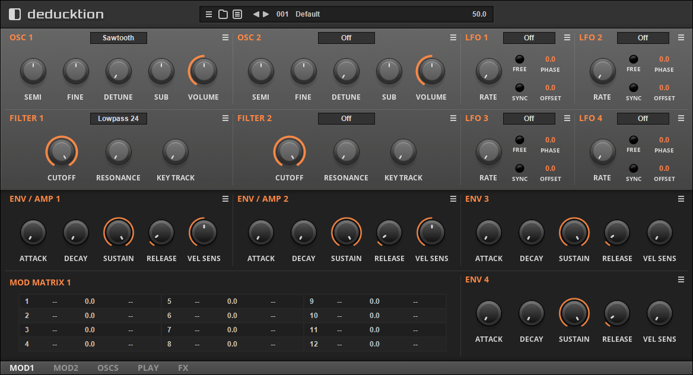
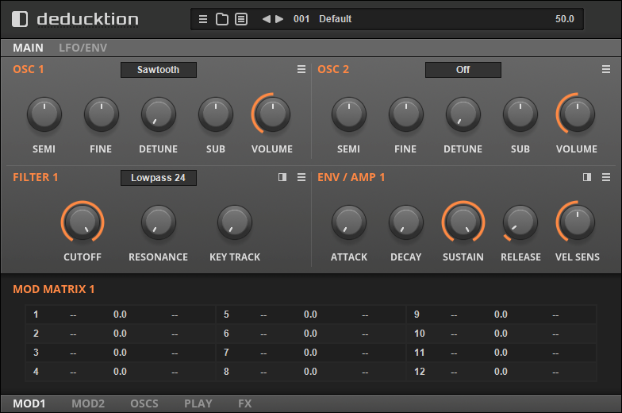
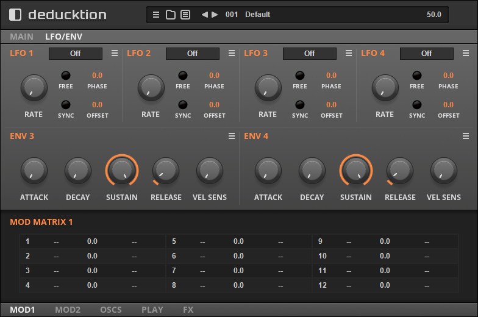
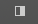
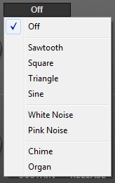
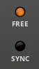
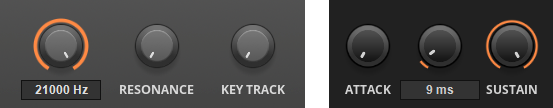
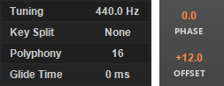

Overview¶
Deducktion is a 32-voice polyphonic software synthesizer for use in audio hosts that support the VST 2.4 plugin format. It available for Windows operating systems in both 32-bit and 64-bit versions.
This guide provides an overview of the functions and operation of the synthesizer.
Installation¶
Deducktion is provided in a simple zip-file package containing the following:
Deducktion_64.dll - the 64-bit version of the plugin.
Deducktion_32.dll - the 32-bit version of the plugin.
To install simply copy the appropriate .dll file to a plugin directory recognised by your host.
Deducktion requires a ‘home’ folder to store various resources such as settings and presets. By default this will be created automatically when the plugin is loaded for the first time. This will create the required folders in the following directory:
C:\Users\<username>\AppData\Local\Dead Duck Software\Deducktion
This allows resources to be shared by all instances of the plugin regardless of where they are installed on your computer. Note that your plugin host will require write-access to these folders to save presets and settings so a shared home folder will be necessary if your plugins are located in restricted directories such as ‘C:\Program Files’.
If you would prefer to keep the plugin resources and settings with the plugin itself it is possible to use a local home folder which is specific to a single instance of the plugin. This requires a folder named ‘Deducktion_Data’ in the same directory as the plugin. On startup Deducktion will look for this folder and if found will use it as the home location. As before make sure Deducktion has write-access to this folder to allow the saving of settings and presets.
User Interface¶
The Deducktion user interface is based on a 3-level structure:
Top Bar - this provides general synthesizer functions such as preset management and master volume control.
Central Panel - this provides the primary synthesis functions including oscillators, filters and modulators.
Lower Bar - this provides supporting functions such as secondary parameters, modulation, routing and effects.
Within this structure Deducktion supports two different layout options: compact and extended.
The compact layout is designed to occupy less screen space and divides the central panel into two pages named MAIN:
and LFO/ENV:
Click the MAIN and LFO/ENV links on the tab bar to switch between the two pages.
The extended view (shown at the top of this page) presents the central panel in a single view.
In compact mode Filter 2 will be hidden behind Filter 1 until made visible using the switch in the upper-right of the section:
Use this to toggle between the two views. Similarly, Envelope 2 will be hidden behind Envelope 1 until made visible using the toggle switch in the envelope section.
Controls¶
Each of the user interface sections make use of various styles of control:
Menus - present multiple options of which one must be selected. Click the menu control to reveal the options and make a selection, ctrl-click to restore its default value.
Switches - provide a choice between two options, usually on or off.
Parameter knobs - control parameter values by mouse-dragging. This may occur in any direction: up/down, left/right or anywhere in between. Press shift while dragging to provide more accurate control. Ctrl-click or double-click to restore the default value.
While the value of the parameter is indicated at any time by the angular position of the knob a more accurate readout will be displayed when the value is being changed. To view this without affecting the position of the knob right-click on the control.
Parameter displays - these function exactly the same as parameter knobs but occupy a smaller area and provide a permanent display of the value. To change the parameter mouse-drag the actual value. As with parameter knobs press shift for more accurate control and use ctrl-click or double-click to reset the value to its default.